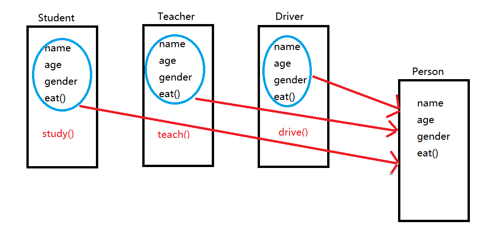

8.1面向对象
前面我们已经将GO语言中各种类型，给大家讲解完毕了，那么接下来要给大家讲解的是面向对象编程思想。
在讲解具体面向对象编程之前，先说一下面向过程编程。我们前面学习都是面向过程的一种编程思想，接下来可以从生活中理解面向过程:
如果我们自己来修电脑，应该有哪些步骤呢？
第一步：判断问题的原因
第二步：找工具
第三步：暴力拆卸
这个修理的步骤就是面向过程，所谓的面向过程就是：强调的是步骤、过程、每一步都是自己亲自去实现的。
如果采用面向对象的思想，那么应该怎样修电脑呢？
找维修店的工作人员来帮我们修电脑，但是到底怎么修，我们是不用考虑的，也就是说我们不关心步骤与过程。
大家可以想一下，在生活中还有哪些事情是面向过程，面向对象的。
比如说，做饭，面向过程就是自己做，自己买菜，自己洗，自己炒，整个过程都有自己来完成，但是如果是面向对象，可以叫外卖，不用关心饭是怎么做的。
所以通过以上案例，大家能够体会出，面向过程就是强调的步骤，过程，而面向对象强调的是对象，找个人来做。
在面向对象中，还有两个概念是比较重要的，一是对象，二是类。
什么是对象呢？
万物皆对象，例如小明同学是一个对象，小亮同学也是一个对象
那么我们在生活中怎样描述一个对象呢？
比如，描述一下小明同学：
姓名：小明
性别：男
身高：180cm
体重：70kg
年龄：22岁
吃喝拉撒睡一切正常健康
吃喝嫖赌抽
通过以上的描述，可以总结出在生活中描述对象，可以通过特征（身高，体重，年龄等）和行为（爱好等）来进行描述。
那么在程序中，可以通过属性和方法（函数）来描述对象。属性就是特征，方法（函数）就是行为。所以说，对象必须具有属性和方法。虽然说，万物皆对象，但是在描述一个对象的时候，一定要具体不能泛指，例如，不能说“电灯”是一个对象，而是说具体的哪一台“电灯”。
大家可以思考一下，如果我们现在描述一下教室中某一台电灯，应该有哪些属性（特征）和方法（行为）呢？
下面我们在思考一下，下面这道题：
小明(一个学生)\杨老师\邻居王叔叔\小亮的爸爸\小亮的妈妈
找出这道题中所有对象的共性（所谓共性，指的是相同的属性和方法）。
所以说，我们可以将这些具有相同属性和相同方法的对象进行进一步的封装，抽象出来类这个概念。
类就是个模子，确定了对象应该具有的属性和方法。
对象是根据类创建出来的
例如:上面的案例中，我们可以抽出一个“人”类（都有年龄，性别，姓名等属性，都有吃饭，走路等行为），“小明”这个对象就是根据“人”类创建出来的，也就是说先有类后有对象。
GO语言中的面向对象
前面我们了解了一下，什么是面向对象，以及类和对象的概念。但是，GO语言中的面向对象在某些概念上和其它的编程语言还是有差别的。
严格意义上说，GO语言中没有类(class)的概念,但是我们可以将结构体比作为类，因为在结构体中可以添加属性（成员），方法（函数）。
面向对象编程的好处比较多，我们先来说一下“继承”，
所谓继承指的是，我们可能会在一些类（结构体）中，写一些重复的成员，我们可以将这些重复的成员，单独的封装到一个类(结构体)中，作为这些类的父类(结构体)，我们可以通过如下图来理解：

当然严格意义上，GO语言中是没有继承的，但是我们可以通过”匿名组合”来实现继承的效果。